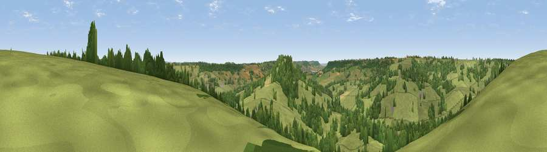

Viewpoint near Beacon
#32999 in England · top 75% of its area beats it · near BeaconThe view, rendered

A 360° render of this exact spot computed from the terrain model, tree cover and land cover — summer colours, afternoon light, calibrated against photographs of famous viewpoints. Real trees, hedges and buildings will differ in detail.
The panorama
Grey silhouette: terrain skyline in each direction (720 bearings, Earth curvature and refraction included). Dashed green: skyline with trees (+15 m) and buildings (+8 m) as obstacles. Blue strip: how far the ground is visible on each bearing.
Where the view opens
Wedge length = distance to the farthest visible ground on that bearing (vegetation-aware). Rings at 10, 25 and 50 km.
What fills the view
68% grassland · 29% woodland · 2% cropland ·
Angular shares of the visible panorama (visual magnitude), not map area. Landscape diversity 0.32 (0–1 Shannon).
Key numbers
More beautiful places nearby
The staircase of upgrades: each row has a higher view potential than everything closer. Driving times are estimates from straight-line distance, calibrated against real road routing — check an actual route before setting out.
| Place | Direction | Drive | Score |
|---|---|---|---|
| Viewpoint near Luppitt | NNE · 1 km | ~3 min | 45.7 |
| Viewpoint near Beacon | S · 2 km | ~4 min | 63.1 |
| Viewpoint near Yarcombe | ENE · 6 km | ~12 min | 63.3 |
| Hembury | WSW · 7 km | ~14 min | 75.9 |
| Viewpoint near Pitminster | N · 12 km | ~22 min | 77.3 |
| Viewpoint near Tipton St John | SSW · 16 km | ~28 min | 81.5 |
| Viewpoint near Axmouth | SE · 19 km | ~33 min | 82.4 |
| Viewpoint near Sidmouth | SSW · 20 km | ~34 min | 83.0 |
50.84293, -3.16922 · source: screening · position refined by local search. Computed location — check access rights before visiting.